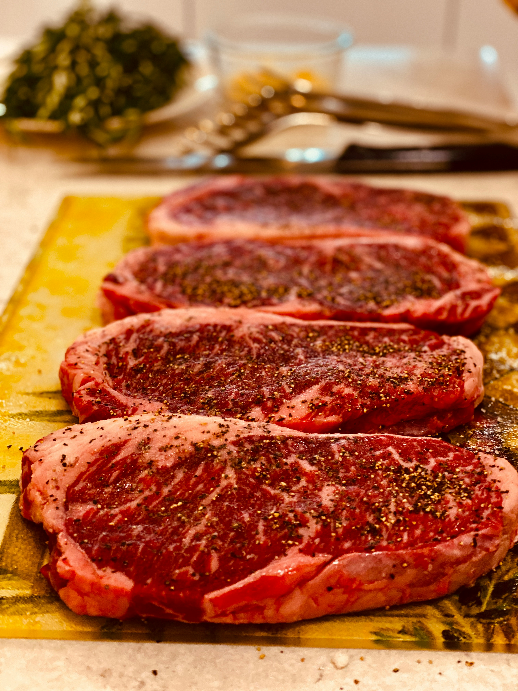

Home
Steak Seasoning

Photo by Yazan Abedelkhaleq on Unsplash
Description
The following recipe is a salt-based seasoning for steak or other beef cuts, such as tri-tip or prime rib.
Ingredients
- 2 tbsp sea-salt
- 1 tbsp garlic salt
- 1/2 tsp black pepper
- 1/2 tsp Italian seasoning
- 1/2 tsp rosemary
Steps
For mixing the ingredients, I recommend using an empty shaker bottle for easy storage. Otherwise, you can use a standard mixing bowl.
- Mix seas-salt, garlic salt, black pepper. Italian seasoning, and rosemary into mixing device of your choice.
- Double or triple the ingredients if you want more seasoning for larger beef cuts.